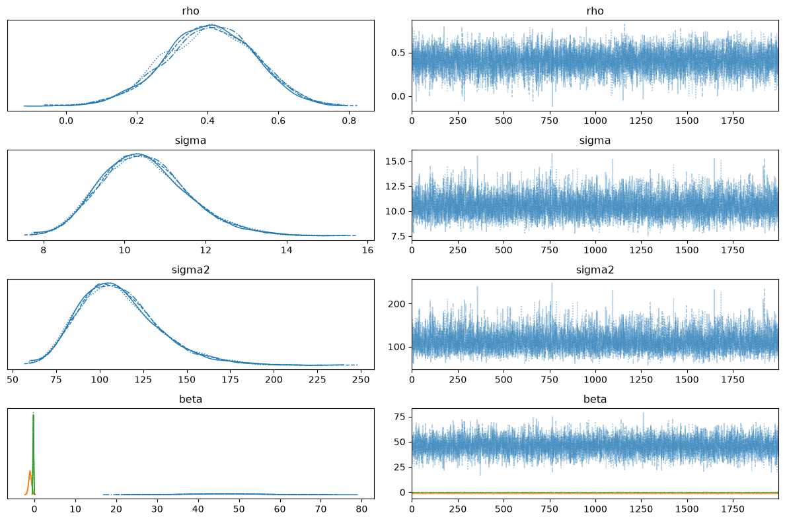

Gibbs Sampler for Gaussian Spatial Models¶
This notebook demonstrates the block-Gibbs sampler for Gaussian spatial regression models (SAR, SEM, SDM, SDEM) in bayespecon. The Gibbs sampler exploits conditional conjugacy to avoid the poor NUTS geometry that spatial Jacobians create, often yielding 10–100× faster sampling for large datasets.
When to Use Gibbs vs NUTS¶
Criterion |
NUTS (default) |
Gibbs |
|---|---|---|
Model type |
Any (Gaussian, Student-t, NB, Probit, Tobit) |
Gaussian only (SAR, SEM, SDM, SDEM) |
Posterior geometry |
Handles banana/funnel shapes via adaptation |
Avoids banana geometry via conjugacy |
Speed |
Slow for large \(n\) (gradient through Jacobian) |
Fast (direct draws for β, σ²; 1-D slice/MALA for ρ/λ) |
Robust models |
✅ Student-t errors |
❌ Not supported |
Non-Gaussian |
NB, Probit, Tobit |
NB, Logit |
ESS/s |
Low for spatial models |
High (conjugate blocks mix well) |
Tuning |
1000+ tuning steps needed |
Minimal (adaptive slice width or MALA step size) |
Rule of thumb: Use sampler='gibbs' for Gaussian spatial models with \(n > 100\). Use NUTS (default) for non-Gaussian models or when you need Student-t robustness.
%load_ext autoreload
%autoreload 2
import arviz as az
import geopandas as gpd
import libpysal
import numpy as np
from bayespecon.models import SAR, SDEM, SDM, SEM
Data: Columbus Crime Dataset¶
We use the classic Columbus (OH) neighbourhood crime dataset from libpysal.
# Load Columbus dataset
gdf = gpd.read_file(libpysal.examples.get_path("columbus.shp"))
# Response: crime rate
y = gdf["CRIME"].values.astype(float)
# Covariates: income + housing value
X = np.column_stack(
[
np.ones(len(y)),
gdf["INC"].values.astype(float),
gdf["HOVAL"].values.astype(float),
]
)
# Spatial weights: queen contiguity
W = libpysal.graph.Graph.build_contiguity(gdf)
W = W.transform("r") # row-standardise
print(f"n = {len(y)}, k = {X.shape[1]}")
n = 49, k = 3
SAR Model: Gibbs vs NUTS¶
The SAR (Spatial Autoregressive) model is:
The Gibbs sampler uses a 3-block strategy:
β | ρ, σ², y — conjugate normal (direct draw)
σ² | β, ρ, y — conjugate inverse-gamma (direct draw)
ρ | β, σ², y — 1-D slice sampling or MALA (non-conjugate, scalar)
Only ρ is non-conjugate, and it’s a scalar — making the update trivial.
# --- NUTS ---
model_nuts = SAR(y=y, X=X, W=W)
idata_nuts = model_nuts.fit(
sampler="nuts",
draws=2000,
tune=1000,
chains=4,
target_accept=0.9,
random_seed=42,
idata_kwargs={"log_likelihood": True},
)
# --- Gibbs (numpy path) ---
model_gibbs = SAR(y=y, X=X, W=W)
idata_gibbs = model_gibbs.fit(
sampler="gibbs",
draws=2000,
tune=1000,
chains=4,
random_seed=42,
n_jobs=-1,
idata_kwargs={"log_likelihood": True},
)
print("NUTS posterior means:")
print(f" rho = {float(idata_nuts.posterior['rho'].mean()):.4f}")
print(f" beta = {idata_nuts.posterior['beta'].mean(dim=['chain', 'draw']).values}")
print(f" sigma = {float(idata_nuts.posterior['sigma'].mean()):.4f}")
print()
print("Gibbs posterior means:")
print(f" rho = {float(idata_gibbs.posterior['rho'].mean()):.4f}")
print(f" beta = {idata_gibbs.posterior['beta'].mean(dim=['chain', 'draw']).values}")
print(f" sigma = {float(idata_gibbs.posterior['sigma'].mean()):.4f}")
Initializing NUTS using jitter+adapt_diag...
Multiprocess sampling (4 chains in 2 jobs)
NUTS: [rho, beta, sigma2]
Sampling 4 chains for 1_000 tune and 2_000 draw iterations (4_000 + 8_000 draws total) took 16 seconds.
/home/runner/micromamba/envs/test/lib/python3.14/site-packages/rich/live.py:260: UserWarning: install "ipywidgets"
for Jupyter support
warnings.warn('install "ipywidgets" for Jupyter support')
/home/runner/micromamba/envs/test/lib/python3.14/site-packages/rich/live.py:260: UserWarning: install "ipywidgets"
for Jupyter support
warnings.warn('install "ipywidgets" for Jupyter support')
Sampling 4 chains for 1000 tune and 2000 draw iterations, 4 x 3,000 draws total took 4s (3300 draws/s)
NUTS posterior means:
rho = 0.4117
beta = [45.6977791 -1.04474323 -0.25777658]
sigma = 10.4805
Gibbs posterior means:
rho = 0.4055
beta = [46.01595333 -1.05140444 -0.25864065]
sigma = 10.5022
# --- Gibbs (numpy path) ---
model_gibbs_numpy = SAR(y=y, X=X, W=W)
idata_gibbs_numpy = model_gibbs.fit(
sampler="gibbs",
gibbs_backend="numpy",
draws=2000,
tune=1000,
chains=4,
random_seed=42,
n_jobs=1,
idata_kwargs={"log_likelihood": True},
)
/home/runner/micromamba/envs/test/lib/python3.14/site-packages/rich/live.py:260: UserWarning: install "ipywidgets"
for Jupyter support
warnings.warn('install "ipywidgets" for Jupyter support')
Sampling 4 chains for 1000 tune and 2000 draw iterations, 4 x 3,000 draws total took 3s (3955 draws/s)
az.summary(idata_nuts)["ess_bulk"]
beta[x0] 3523.0
beta[x1] 4018.0
beta[x2] 5147.0
rho 3859.0
sigma2 5252.0
sigma 5252.0
Name: ess_bulk, dtype: float64
az.summary(idata_gibbs)["ess_bulk"]
rho 8005.0
sigma 7315.0
sigma2 7315.0
beta[x0] 7947.0
beta[x1] 7676.0
beta[x2] 8169.0
Name: ess_bulk, dtype: float64
az.summary(idata_gibbs_numpy)["ess_bulk"]
rho 8002.0
sigma 7017.0
sigma2 7017.0
beta[x0] 8134.0
beta[x1] 7962.0
beta[x2] 8045.0
Name: ess_bulk, dtype: float64
model_gibbs.spatial_diagnostics_decision()
/home/runner/micromamba/envs/test/lib/python3.14/site-packages/tqdm/auto.py:21: TqdmWarning: IProgress not found. Please update jupyter and ipywidgets. See https://ipywidgets.readthedocs.io/en/stable/user_install.html
from .autonotebook import tqdm as notebook_tqdm

Gibbs Backend Options¶
The Gibbs sampler supports two execution backends:
Backend |
|
ρ/λ update |
JIT compiled |
Requires |
|---|---|---|---|---|
NumPy |
|
Adaptive slice sampling |
No |
NumPy only |
JAX |
|
Slice sampling (default), MALA, or RW-MH |
Yes ( |
JAX + equinox |
NumPy path¶
The NumPy path uses adaptive slice sampling for ρ/λ. It’s pure Python/NumPy — no JAX dependency. Best for moderate \(n\) (up to ~1000). Chains run in parallel by default (n_jobs=-1 uses all CPUs via joblib). Set n_jobs=1 for sequential execution with progress bars.
JAX path (default when installed)¶
The JAX path compiles the entire 3-block Gibbs step into a single XLA kernel via @eqx.filter_jit. It supports three ρ/λ samplers:
Slice sampling (default,
use_slice=True): Neal (2003) slice sampling with persistent interval reuse. Best ESS per sample.MALA (
use_mala=True, use_slice=False): Metropolis-adjusted Langevin algorithm with JAX autodiff for exact gradients.RW-MH (
use_mala=False, use_slice=False): Random-walk Metropolis–Hastings. Simplest but worst mixing.
Best for large \(n\) where JIT compilation amortizes over many iterations. Chains run in parallel via jax.vmap by default (chain_method="vectorized").
# JAX Gibbs with slice sampling (default for JAX path)
model_jax_slice = SAR(y=y, X=X, W=W)
idata_jax_slice = model_jax_slice.fit(
sampler="gibbs",
gibbs_backend="jax", # slice sampling is the default
draws=2000,
tune=1000,
chains=4,
random_seed=42,
)
print("JAX Slice posterior means:")
print(f" rho = {float(idata_jax_slice.posterior['rho'].mean()):.4f}")
print(f" sigma = {float(idata_jax_slice.posterior['sigma'].mean()):.4f}")
/home/runner/micromamba/envs/test/lib/python3.14/site-packages/rich/live.py:260: UserWarning: install "ipywidgets"
for Jupyter support
warnings.warn('install "ipywidgets" for Jupyter support')
Sampling 4 chains for 1000 tune and 2000 draw iterations, 4 x 3,000 draws total took 3s (3507 draws/s)
JAX Slice posterior means:
rho = 0.4055
sigma = 10.5022
Log-Determinant Method Choices¶
The spatial Jacobian \(\log|I - \rho W|\) is the computational bottleneck. bayespecon supports several approximation methods:
Method |
|
Extra option |
Precompute |
Per-ρ cost |
JIT-compatible |
Best for |
|---|---|---|---|---|---|---|
Eigenvalue |
|
— |
O(n³) |
O(n) |
✅ |
n < 500 |
Chebyshev |
|
exact coefficients when feasible |
O(n³) or O(nm) |
O(m) |
✅ |
default for n ≥ 500 |
Chebyshev + stochastic traces |
|
Barry-Pace Hutchinson (built-in) |
O(kmn) |
O(m) |
✅ |
large sparse W |
The Gibbs sampler automatically uses the same logdet configuration as the model. For the JAX path, the supported public choices are JIT-compatible.
SEM, SDM, and SDEM Models¶
The Gibbs sampler works for all four Gaussian spatial model types:
Model |
Spatial parameter |
ρ/λ update |
Null model for ρ/λ |
|---|---|---|---|
SAR |
ρ (lag) |
Collapsed slice/MALA |
Integrates out β, σ² |
SEM |
λ (error) |
Conditional slice/MALA |
Conditional on β, σ² |
SDM |
ρ (lag) |
Collapsed slice/MALA |
Same as SAR, Z = [X, WX] |
SDEM |
λ (error) |
Conditional slice/MALA |
Same as SEM, Z = [X, WX] |
# SEM Gibbs
model_sem = SEM(y=y, X=X, W=W)
idata_sem = model_sem.fit(
sampler="gibbs",
draws=2000,
tune=1000,
chains=4,
random_seed=42,
n_jobs=-1,
)
print(
f"SEM Gibbs: lam = {float(idata_sem.posterior['lam'].mean()):.4f}, "
f"sigma = {float(idata_sem.posterior['sigma'].mean()):.4f}"
)
# SDM Gibbs
model_sdm = SDM(y=y, X=X, W=W)
idata_sdm = model_sdm.fit(
sampler="gibbs",
draws=2000,
tune=1000,
chains=4,
random_seed=42,
n_jobs=-1,
)
print(
f"SDM Gibbs: rho = {float(idata_sdm.posterior['rho'].mean()):.4f}, "
f"beta shape = {idata_sdm.posterior['beta'].shape}"
)
# SDEM Gibbs
model_sdem = SDEM(y=y, X=X, W=W)
idata_sdem = model_sdem.fit(
sampler="gibbs",
draws=2000,
tune=1000,
chains=4,
random_seed=42,
n_jobs=-1,
)
print(
f"SDEM Gibbs: lam = {float(idata_sdem.posterior['lam'].mean()):.4f}, "
f"beta shape = {idata_sdem.posterior['beta'].shape}"
)
/home/runner/micromamba/envs/test/lib/python3.14/site-packages/rich/live.py:260: UserWarning: install "ipywidgets"
for Jupyter support
warnings.warn('install "ipywidgets" for Jupyter support')
Sampling 4 chains for 1000 tune and 2000 draw iterations, 4 x 3,000 draws total took 4s (2911 draws/s)
/home/runner/micromamba/envs/test/lib/python3.14/site-packages/rich/live.py:260: UserWarning: install "ipywidgets"
for Jupyter support
warnings.warn('install "ipywidgets" for Jupyter support')
SEM Gibbs: lam = 0.5519, sigma = 10.4058
SDM Gibbs: rho = 0.3948, beta shape = (4, 2000, 5)
SDEM Gibbs: lam = 0.4968, beta shape = (4, 2000, 5)
Sampling 4 chains for 1000 tune and 2000 draw iterations, 4 x 3,000 draws total took 4s (3337 draws/s)
/home/runner/micromamba/envs/test/lib/python3.14/site-packages/rich/live.py:260: UserWarning: install "ipywidgets"
for Jupyter support
warnings.warn('install "ipywidgets" for Jupyter support')
Sampling 4 chains for 1000 tune and 2000 draw iterations, 4 x 3,000 draws total took 4s (2879 draws/s)
az.summary(idata_sdm)
| mean | sd | hdi_3% | hdi_97% | mcse_mean | mcse_sd | ess_bulk | ess_tail | r_hat | |
|---|---|---|---|---|---|---|---|---|---|
| rho | 0.395 | 0.170 | 0.083 | 0.717 | 0.002 | 0.002 | 8006.0 | 5692.0 | 1.0 |
| sigma | 10.558 | 1.114 | 8.579 | 12.675 | 0.013 | 0.010 | 6873.0 | 7413.0 | 1.0 |
| sigma2 | 112.721 | 24.182 | 73.271 | 160.275 | 0.292 | 0.248 | 6873.0 | 7413.0 | 1.0 |
| beta[x0] | 44.098 | 14.040 | 17.736 | 70.317 | 0.158 | 0.139 | 7966.0 | 6298.0 | 1.0 |
| beta[x1] | -0.943 | 0.369 | -1.632 | -0.241 | 0.004 | 0.003 | 8012.0 | 7315.0 | 1.0 |
| beta[x2] | -0.295 | 0.101 | -0.487 | -0.108 | 0.001 | 0.001 | 8205.0 | 7606.0 | 1.0 |
| beta[W*x1] | -0.468 | 0.632 | -1.620 | 0.775 | 0.007 | 0.005 | 8003.0 | 7556.0 | 1.0 |
| beta[W*x2] | 0.235 | 0.199 | -0.142 | 0.602 | 0.002 | 0.002 | 7921.0 | 7734.0 | 1.0 |
InferenceData Compatibility¶
The Gibbs sampler produces the same az.InferenceData output as NUTS, with posterior, log_likelihood, and observed_data groups. This means all ArviZ diagnostics (LOO, WAIC, summary, etc.) work seamlessly.
CAUTION: LOO and WAIC are misleading for models with spatial autoregressive terms. Use the package’s model diagnostics to help guide model fit; this section intends to show that these models are fully compatible with arviz
# ArviZ diagnostics work with Gibbs-produced InferenceData
print("Groups:", idata_gibbs.groups())
print()
# LOO cross-validation
loo = az.loo(idata_gibbs)
print(f"LOO: elpd = {loo.elpd_loo:.2f}, SE = {loo.se:.2f}")
print()
# WAIC
waic = az.waic(idata_gibbs)
print(f"WAIC: elpd = {waic.elpd_waic:.2f}, SE = {waic.se:.2f}")
print()
# Summary
az.summary(idata_gibbs, var_names=["rho", "sigma"])
Groups: ['posterior', 'log_likelihood', 'sample_stats', 'observed_data']
LOO: elpd = -254.01, SE = 22.05
WAIC: elpd = -220.86, SE = 15.84
/home/runner/micromamba/envs/test/lib/python3.14/site-packages/arviz/stats/stats.py:782: UserWarning: Estimated shape parameter of Pareto distribution is greater than 0.70 for one or more samples. You should consider using a more robust model, this is because importance sampling is less likely to work well if the marginal posterior and LOO posterior are very different. This is more likely to happen with a non-robust model and highly influential observations.
warnings.warn(
/home/runner/micromamba/envs/test/lib/python3.14/site-packages/arviz/stats/stats.py:1652: UserWarning: For one or more samples the posterior variance of the log predictive densities exceeds 0.4. This could be indication of WAIC starting to fail.
See http://arxiv.org/abs/1507.04544 for details
warnings.warn(
| mean | sd | hdi_3% | hdi_97% | mcse_mean | mcse_sd | ess_bulk | ess_tail | r_hat | |
|---|---|---|---|---|---|---|---|---|---|
| rho | 0.406 | 0.128 | 0.16 | 0.642 | 0.001 | 0.001 | 8005.0 | 5971.0 | 1.0 |
| sigma | 10.502 | 1.078 | 8.66 | 12.670 | 0.013 | 0.009 | 7315.0 | 7770.0 | 1.0 |
import matplotlib.pyplot as plt
az.plot_trace(idata_gibbs)
plt.tight_layout()

Spatial Diagnostics¶
The Gibbs-produced InferenceData also works with bayespecon’s Bayesian LM diagnostics, which test for spatial dependence in the residuals.
# Run spatial diagnostics on the Gibbs-fitted SAR model
report = model_gibbs.spatial_diagnostics()
print(report)
statistic median df p_value ci_lower \
test
LM-Error 63.568933 4.022099 1 1.554312e-15 0.015997
LM-WX 357.458738 123.740412 2 0.000000e+00 1.491911
Robust-LM-WX 1622.911781 552.478228 2 0.000000e+00 2.573554
Robust-LM-Error 0.207840 0.134203 1 6.484657e-01 0.025429
ci_upper
test
LM-Error 527.343692
LM-WX 2054.380655
Robust-LM-WX 9378.016085
Robust-LM-Error 0.844670
Summary¶
The block-Gibbs sampler for Gaussian spatial models in bayespecon provides:
Same output format as NUTS (
az.InferenceDatawithposterior,log_likelihood,observed_data)Two backends: NumPy (adaptive slice,
n_jobscontrols parallelism, default parallel) and JAX (slice/MALA/RW-MH,chain_methodcontrols parallelism, default vectorized)All four Gaussian models: SAR, SEM, SDM, SDEM
Full ArviZ compatibility: LOO, WAIC, summary, plot
Full diagnostics compatibility: Bayesian LM tests, spatial diagnostics
# Quick reference
model = SAR(y=y, X=X, W=W)
# NumPy Gibbs (default, n_jobs=-1 runs chains in parallel via joblib)
idata = model.fit(sampler="gibbs", draws=2000, tune=1000, chains=4)
# NumPy Gibbs with sequential chains (for debugging)
idata = model.fit(sampler="gibbs", draws=2000, tune=1000, chains=4, n_jobs=1)
# JAX Gibbs with slice sampling (default for JAX path)
idata = model.fit(sampler="gibbs", gibbs_backend="jax", draws=2000, tune=1000, chains=4)
# JAX Gibbs with MALA
idata = model.fit(sampler="gibbs", gibbs_backend="jax", use_mala=True, use_slice=False, draws=2000, tune=1000, chains=4)
# JAX Gibbs with RW-MH
idata = model.fit(sampler="gibbs", gibbs_backend="jax", use_mala=False, use_slice=False, draws=2000, tune=1000, chains=4)
# Chebyshev logdet + JAX Gibbs
model = SAR(y=y, X=X, W=W, logdet_method="chebyshev")
idata = model.fit(sampler="gibbs", gibbs_backend="jax", draws=2000, tune=1000, chains=4)